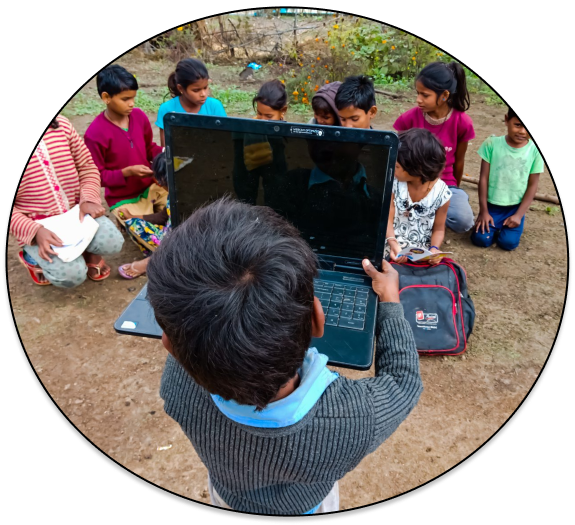

Quand les inégalités d'accès au réseau impactent les droits
fondamentaux
En 2016, plus de la moitié de la population n'avait pas accès à internet. Ceci s’expliquait par un coût prohibitif du haut débit, selon un rapport de l’ONU. Selon l’Union internationale des télécommunications , qui siège à Genève, 3.9 milliards des personnes, sur les 7.4 milliards d’habitants dans le monde, n’avait pas accès à internet.
L’usage d’internet en 2019 par région du monde (en %)
82,5% Europe
77,2% Amériques
72,2% CEI
51,6% Pays Arabes
48,1% Asie et Pacifique
28,2% Afrique
Chacun n’a pas les mêmes chances d’accéder à Internet selon la partie du monde où il habite. Il faut avoir accès à l’électricité, habiter dans une zone couverte par un réseau filaire ou 3G, pouvoir s’offrir un équipement coûteux (ordinateur, smartphone) et payer un abonnement. En Europe et en Amérique, au moins trois quarts de la population réunissent ces conditions. Les pays arabes et l’Asie sont dans une situation intermédiaire où environ la moitié des habitants sont internautes.
Dans ces deux régions du globe, les contrastes sont grands d’un pays à l’autre. Certains pays du Golfe persique frôlent les 100 % d’utilisateurs d’Internet, de même que la Corée du Sud (95 % en 2017 [4]). 80 % des Chinois surfent sur le web. En Inde et en Indonésie, en revanche, moins d’un tiers de la population est connectée.
1,1 milliard d'Africains, moins de 200 millions de connect
Le plus frappant ici est bien entendu les données concernant l'Afrique. Le continent qui abrite 1,1 milliard d'individus est de loin le moins équipé avec un taux global approchant les 18%, soit un peu moins de 200 millions d'africains (chiffres provenant d'autres statistiques datant de 2014). Si la proportion a nettement augmenté depuis 2011, principalement en Afrique du Sud, au Kenya, au Nigéria, en Égypte et au Maroc, 29 des 47 pays subsahariens ont un pourcentage de population ayant accès à Internet qui n'atteint pas les 10%.
Impact...
Ces exclus du monde numérique global sont lourdement pénalisés, depuis leur employabilité jusqu’à leur citoyenneté. Plus généralement, l’augmentation de la circulation des textes et des images se fait au détriment de la qualité des contenus, et donc expose les plus fragiles à l’échec, à la désinformation, voire aux manipulations des entrepreneurs identitaires.

SANTÉ NUMÉRIQUE
Il faut bien se rendre compte de la réalité de la situation dans les pays en développement. Dans ces pays, les inégalités sont sans commune mesure avec ce que l’on évoque dans les pays développés : les personnes vulnérables et défavorisées accèdent plus difficilement aux soins, tombent davantage malades et meurent plus jeunes que les personnes qui occupent une position sociale plus privilégiée. Le risque pour un enfant de décéder avant son 5ème anniversaire est 8 fois plus élevé dans la région africaine qu’en Europe selon l’OMS. Dans 9 pays d’Afrique Subsaharienne, l’espérance de vie moyenne des hommes et des femmes est inférieure à 55 ans. Les pays à revenu élevé disposent en moyenne de près de 90 infirmières et sages-femmes pour 10000 habitants, tandis que dans certains pays à revenu faible, la densité de ce type de personnel est inférieure à 2 pour 10000 habitants. Il faut bien se rendre compte de la réalité de la situation dans les pays en développement. Dans ces pays, les inégalités sont sans commune mesure avec ce que l’on évoque dans les pays développés : personnes vulnérables et défavorisées accèdent plus difficilement aux soins, tombent davantage malades et meurent plus jeunes que les personnes qui occupent une position sociale plus privilégiée.

1 Accès inéquitable à des informations de santé fiables. Au niveau individuel, la désinformation et le manque d’information constituent des obstacles à la capacité d’une personne de prendre soin de sa santé. Les outils et approches numériques ont un grand rôle à jouer pour répondre au besoin d’informations de santé fiables.

2 Accès inéquitable à l’expertise médicale On estime que 18 millions d’agents de santé supplémentaires sont nécessaires pour atteindre la couverture sanitaire universelle d’ici 2030. L’accès au réseau, essentiel à la communication entre centres médicaux, ainsi que les outils d’aide à la décision activés par l’intelligence artificielle (IA) peuvent, par exemple, étendre l’expertise médicale aux régions confrontées à une pénurie de travailleurs de la santé.
3 Accès inéquitable aux produits médicaux et autres interventions : La disponibilité des produits médicaux essentiels (médicaments, vaccins, appareils, etc) joue un rôle primordial sur la qualité des soins. L’accès au réseau, les outils de communication et approches numériques peuvent rationaliser les chaînes d’approvisionnement et fournir de meilleures données pour anticiper et résoudre les pénuries d’approvisionnement lorsqu’elles surviennent.
Éducation
La fracture numérique
En effet, deux tiers des enfants et jeunes de 25 ans n’ont pas accès à Internet à la maison, soit 2,2 milliards d’enfants qui ne sont pas connectés chez eux. De plus, l’accès à Internet est un marqueur d’inégalités supplémentaires. D’après les données issues du rapport et des enquêtes auprès des ménages, des inégalités considérables sont observées entre les pays, les régions, les groupes de richesse et les milieux urbain-rural : 58% des ménages les plus riches disposent d'une connexion internet à la maison, contre seulement 16 % pour les ménages les plus pauvres Seulement 6% des enfants et des jeunes issus des pays à faible revenu ont accès à Internet, contre 87% dans les pays à revenu élevé Seuls 5% des enfants et des jeunes en Afrique de l'Ouest et du Centre ont accès à Internet à domicile, contre 33% en moyenne mondiale Dans le monde, 25% des enfants et des jeunes ruraux âgés de 25 ans ont accès à Internet
Il est crucial de comprendre l’importance d’une infrastructure numérique solide. Des études récentes ont montré qu’une solide infrastructure de connectivité peut atténuer jusqu’à la moitié des impacts économiques négatifs liés aux pandémies (World Bank , 2020). En outre, les pays qui ont le plus souffert de la pandémie de la COVID-19, ont été les pays dotés d’une infrastructure numérique médiocre, qui, en 2020, n’étaient toujours pas en mesure d’offrir des services publics numériques et d’introduire les technologies numériques au sein de l’économie (World Bank , 2020).
Depuis la COVID-19, en Asie de l’Est et dans le Pacifique, les fermetures d’écoles ont touché plus de 325 millions d’enfants et l’enseignement en ligne n’est pas une solution à long terme pour des millions d’enfants défavorisés (Karin Hulshof and H.E Pirkka Tapiola, n.d.). Alors que 80 millions d’enfants ne peuvent accéder à un enseignement numérique chez eux, on estime qu’au moins 2,7 millions dans cette région ne retourneront pas à l’école (Karin Hulshof and H.E Pirkka Tapiola, n.d.). Cette situation reflète la triste réalité académique de la région. Avant la pandémie de la COVID-19, les deux tiers des enfants de CM2 (10 – 11 ans) étaient incapables de lire ou de comprendre les mathématiques à un niveau minimum d’apprentissage (Karin Hulshof and H.E Pirkka Tapiola, n.d.).
Une bonne éducation est la clé qui ouvre les portes vers un meilleur avenir. Alors que le monde universitaire a considérablement modifié sa structure pour s’adapter à la pandémie, il est indéniable qu’un manque de connectivité constitue un obstacle qui empêchera des millions d’enfants d’avancer dans la vie (UNICEF, 2020). Par ailleurs, même avec une connexion internet suffisamment bonne à la maison, les enfants ne sont pas toujours en mesure d’y accéder en raison de la pression croissante exercée par les tâches ménagères ou le travail, du manque d’appareils numériques à partager au sein de la famille ainsi que du manque de connaissances des possibilités offertes en ligne. (UNICEF, 2020).
Les répercussions


Lors de crises mondiales telles que la pandémie de la COVID-19, les écoliers des pays à faible revenu et à revenu intermédiaire inférieur sont les moins susceptibles de voir leurs pertes d’éducation documentées, les moins susceptibles d’avoir accès à des cours en ligne, et les plus susceptibles d’avoir des retards dans la réouverture de leurs écoles et de ne pas disposer de ressources adéquates pour garantir leur sécurité. Bien que la transition de l’école en présentiel à un enseignement en ligne depuis son domicile soit évidente, les fermetures d’établissements scolaires ont des conséquences largement négatives sur les enfants des pays à faible revenu. Lorsque les écoles ferment, les mariages précoces, l’exploitation sexuelle des filles et des jeunes femmes, et les grossesses d’adolescentes augmentent (UNESCO, n.d.). Le travail des enfants est une autre triste réalité à laquelle les enfants sont confrontés quand les écoles ferment. Il est de même de la malnutrition, car nombreux sont les enfants qui dépendent des repas gratuits ou à prix réduit que l’école fournit, leur garantissant une bonne nutrition et une bonne santé